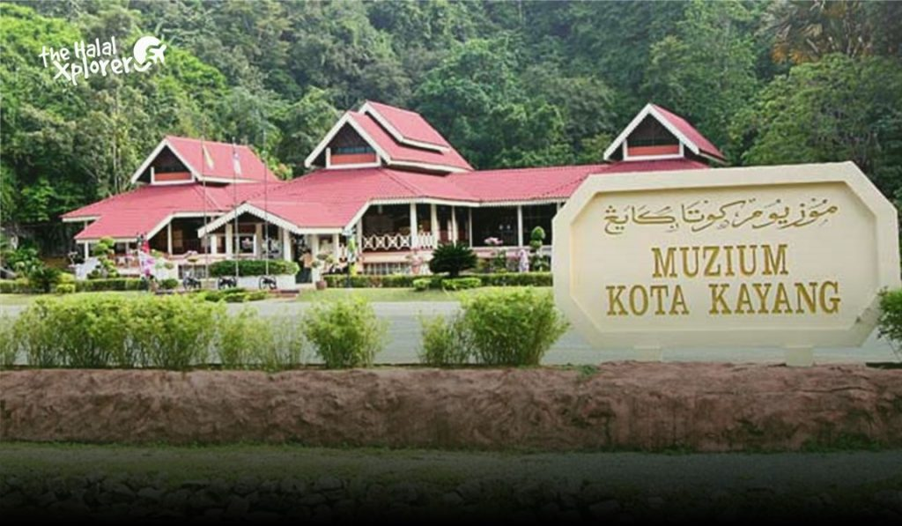
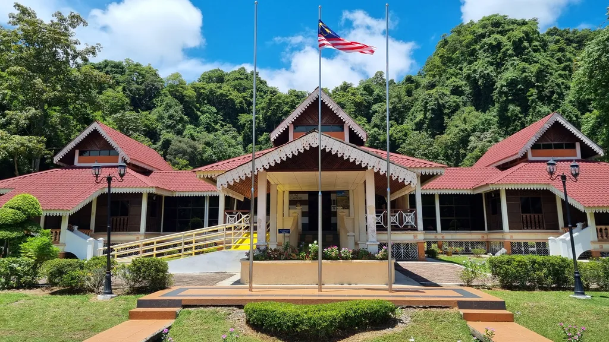
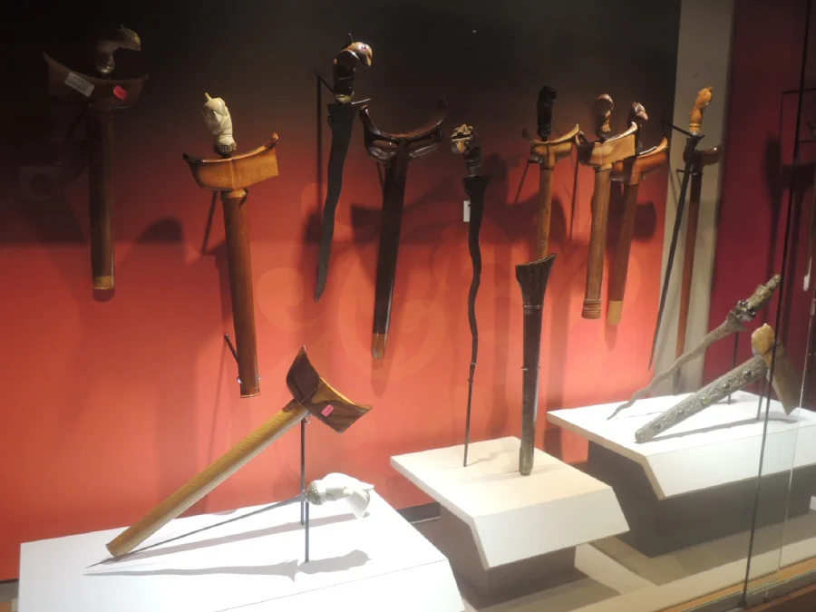
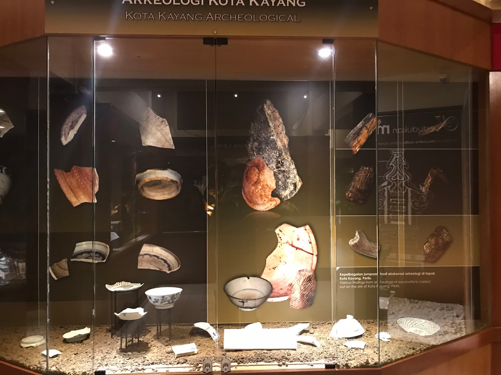

Muzium Kota Kayang: A Glimpse into Perlis' Rich Heritage
Muzium Kota Kayang is a historical museum in Perlis that showcases the rich heritage of the state. Built on a former royal residence site, the museum features traditional Malay architecture and exhibits on Perlis’ royal lineage, archaeology, and cultural artifacts. Surrounded by scenic limestone hills, it's a peaceful spot to learn about the state’s past and royal history.
Muzium Kota Kayang, located in Kuala Perlis, is a historical gem that offers visitors an immersive journey into the cultural and royal heritage of Perlis. Built on the site of a former royal residence, the museum is nestled within a serene landscape, surrounded by limestone hills and lush greenery. Its strategic location adds to the charm and historical value, as it once served as a residence for royal family members and high-ranking officials during the colonial period.
Inside the museum, visitors are treated to a wide collection of artifacts, including ancient weapons, traditional clothing, historical documents, and royal regalia. These exhibits highlight the customs, traditions, and lifestyles of the Malay royal family and the local people of Perlis. The museum is divided into several galleries, each offering a thematic focus — from archaeological findings to royal ancestry, providing a comprehensive view of the state’s development over the centuries.
More than just a display of historical items, Muzium Kota Kayang serves as an educational center that preserves and promotes the cultural identity of Perlis. Through guided tours and informative panels, the museum helps visitors, especially younger generations, appreciate the significance of their roots. It stands today not only as a tribute to the past but also as a symbol of pride for the people of Perlis, celebrating their history and traditions for future generations to explore and cherish.
 